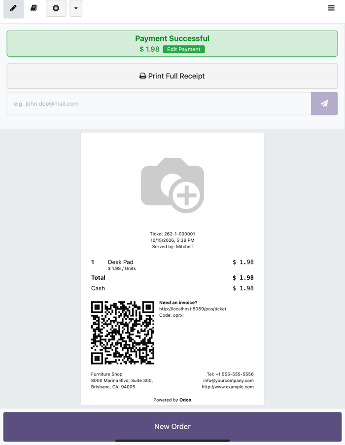

Odoo 19 Point of Sale relies on browser features that only exist from Safari 16/17. iPads that stop at iPadOS 15 (iPad Air 2, iPad mini 4, iPad 5th generation) run Safari 15.6, and the same engine is used by Chrome and the Odoo app on those devices. As a result:
this._tables.difference is not a function).toReversed / toSorted missing).AbortSignal.timeout missing).It loads a small set of standard-compliant polyfills right after Odoo's module loader, before any Point of Sale code runs. Each polyfill only installs when the browser lacks the feature, so modern browsers and devices are not affected. No configuration, no server-side code.
Polyfilled features:
Array.prototype.toSorted / toReversed / toSpliced / with, Array.fromAsyncSet.prototype.union / intersection / difference / symmetricDifference / isSubsetOf / isSupersetOf / isDisjointFromAbortSignal.timeout / anyObject.groupBy, Map.groupBy, Promise.withResolversLoaded in the Point of Sale UI, the customer display and the backend.
Odoo 19.0 (Community) with Point of Sale demo data, in Safari on iPad with the Safari 15.6 feature set emulated: the register loads, products and taxes compute, payment validates and the receipt is generated. Without the module the register stays on the loading screen.

point_of_sale.use_lna system parameter must not be set (Local Network Access mode is
Chromium-only and not supported on iOS).
Built and maintained by Sendan. Issues and contributions: github.com/sendan-tech/odoo-pos-ios15-compat